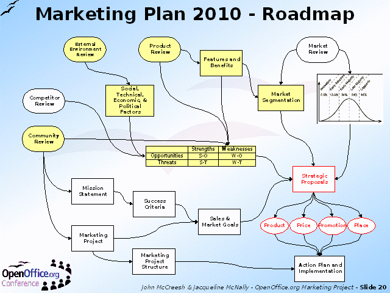

Notes:
A review of all the areas covered so far by the Workshop, before moving on to creating proposals for actions. However, notice that it should be possible to trace every proposal back to one or more of the starting points of the strategy. This means that there is a clear reason for every proposal and every action in the plan.
The proposals themselves are split into the traditional "4Ps" of marketing:
Product
Price
Place (distribution) and
Promotional activites